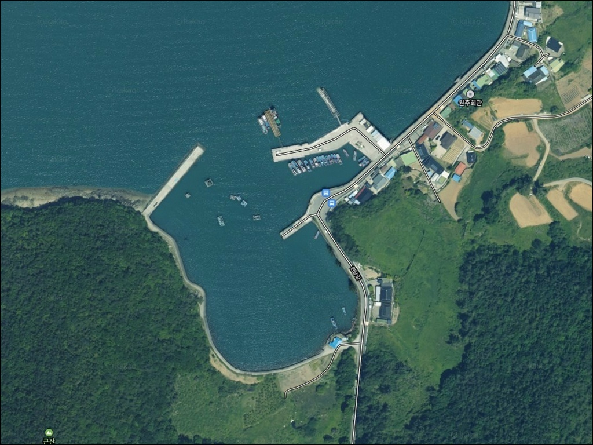
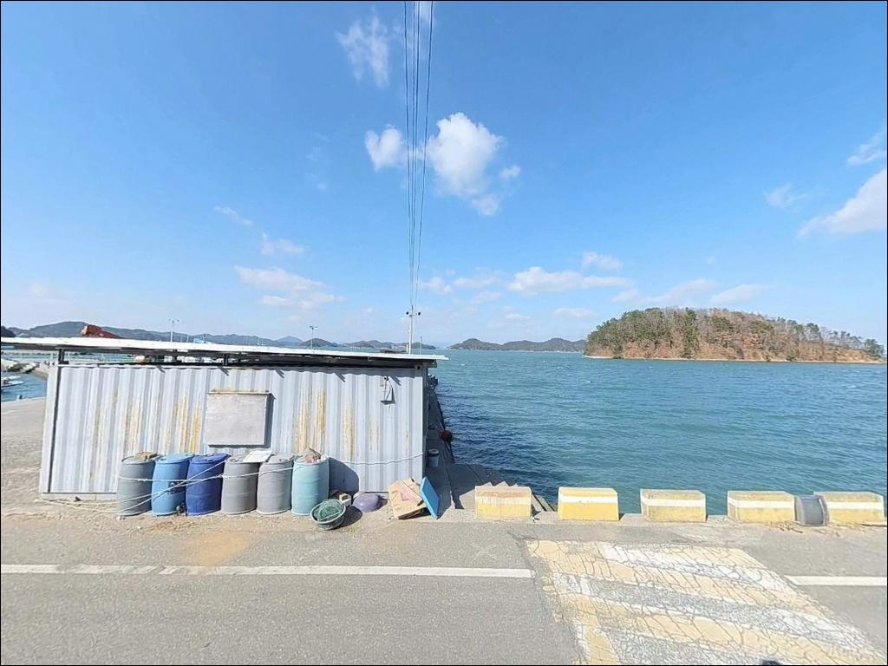
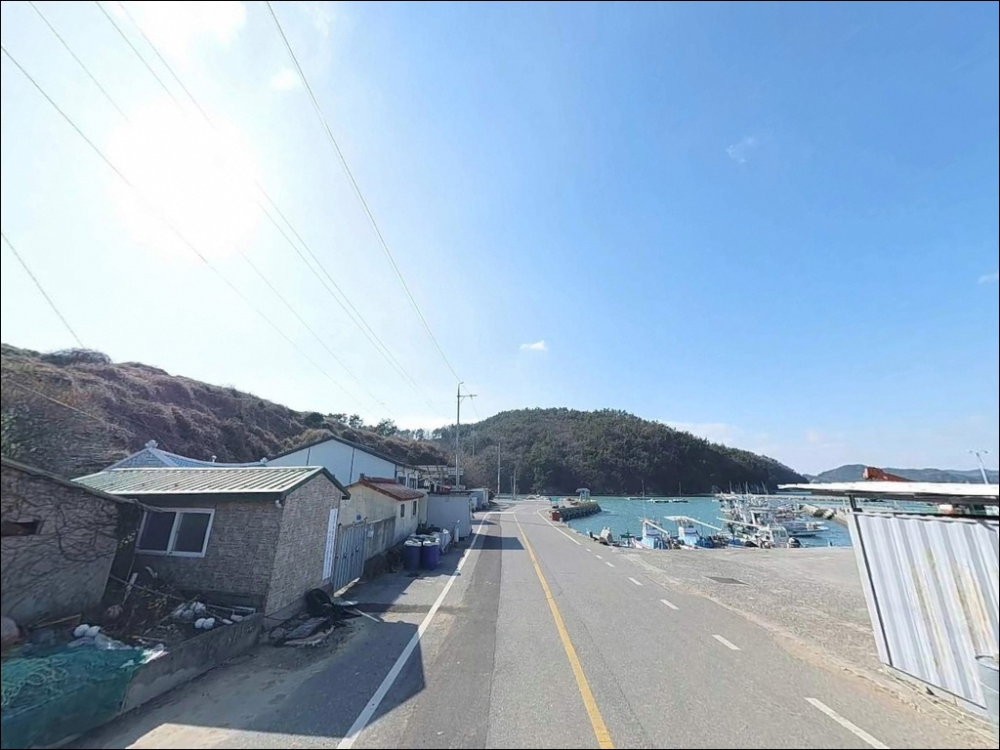
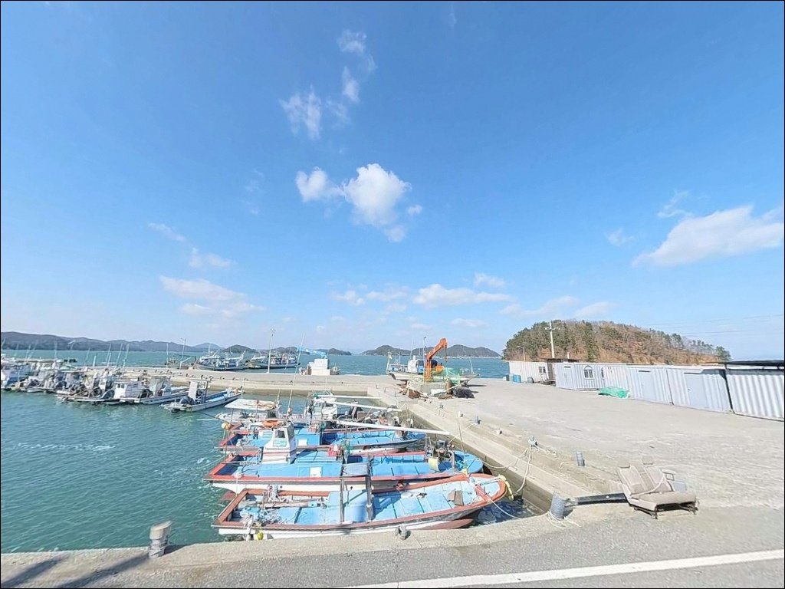
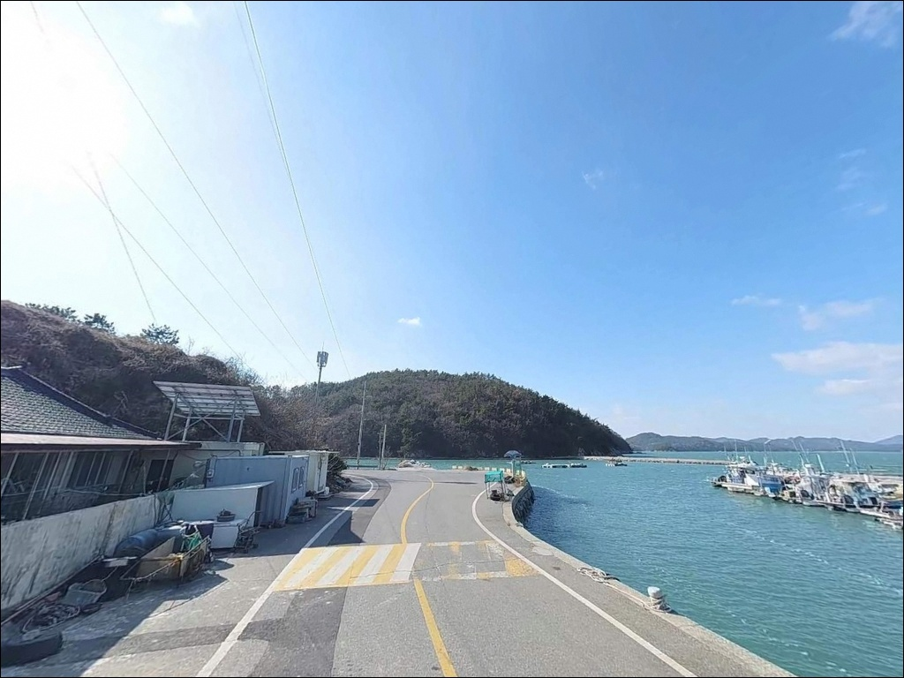
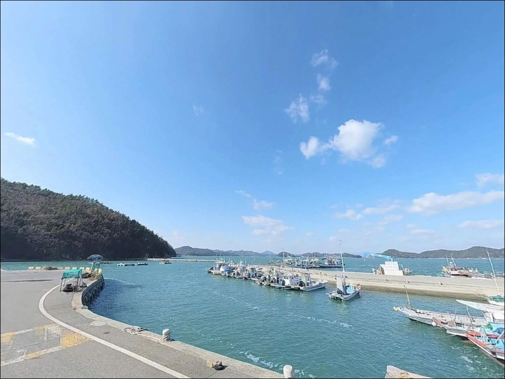
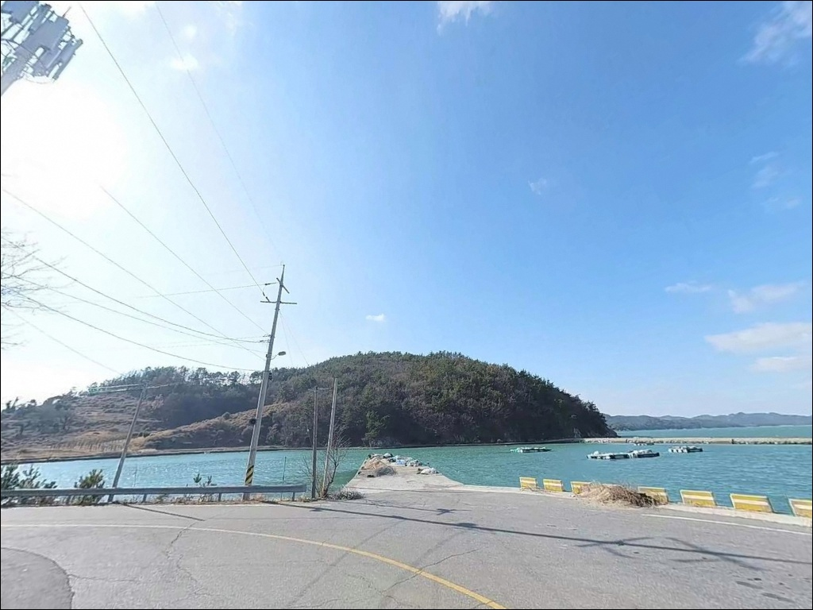
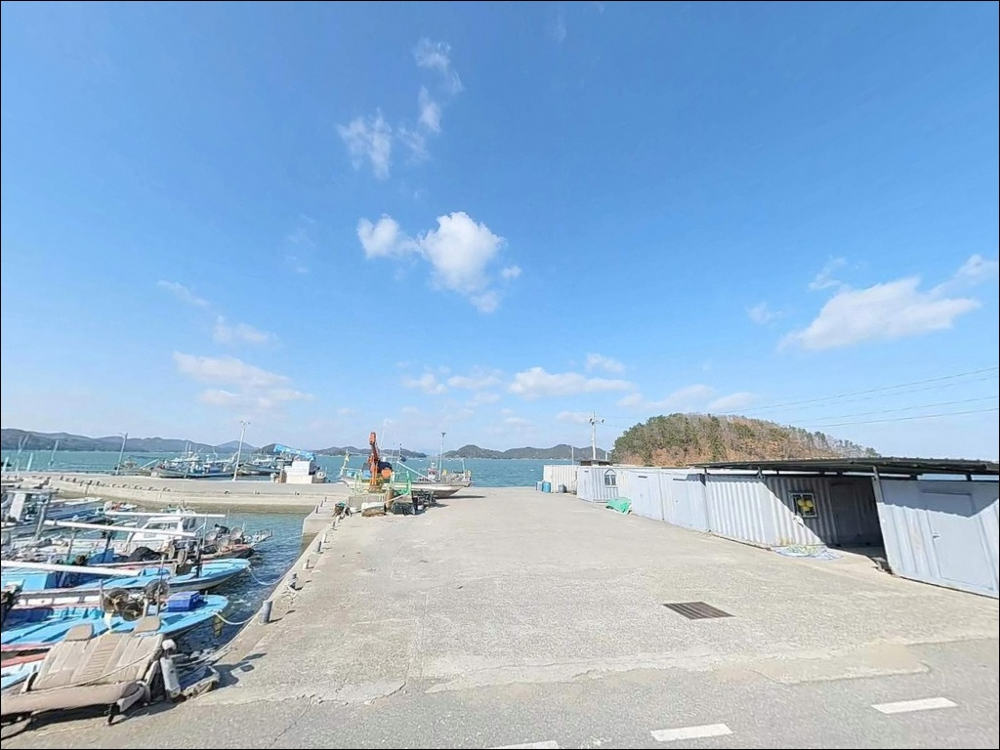
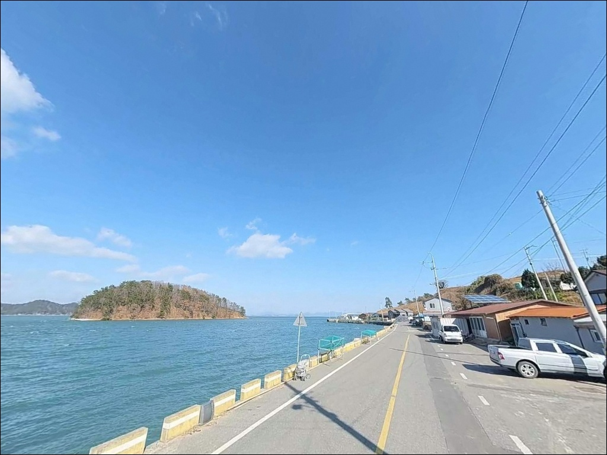

간조 시 수심 2m까지 낮아지는 고흥 원주항, 만조 타이밍에 갈린 갑오징어 조과
이 페이지에는 광고(제휴 링크 포함)가 있으며, 광고 링크를 통해 구매하면 운영자가 판매 수익 또는 수수료를 받을 수 있습니다. 포인트 사진: 카카오맵 스카이뷰·로드뷰. 이 페이지의 지도·사진 이미지는 카카오맵의 실제 서비스 이미지와 다를 수 있습니다.


포인트 안내
원주항
전남 고흥군 과역면 백일리 131
간조 때 원주항에 도착하면
수심이 2~3m 수준으로 내려앉아
채비를 멀리 던져도 바닥층을 벗어나기 어렵습니다.
만조 전후 타이밍과 간조 타이밍의
조과 차이가 큰 구조의 항구입니다.
득량만 내측에 위치한 원주항은
백일도 연안을 끼고 형성된 소형 어항입니다.
'ㄱ'자 형태로 꺾인 방파제와
넓은 선착장이 함께 구성되어 있으며,
갑오징어 에깅과 원투낚시 모두
소화할 수 있는 지형 조건을 갖추고 있습니다.
이 글은 원주항의 진입 환경,
차박 체류 여건, 낚시 방식별 조건에 집중합니다.
조황 단정이나 특정 어종 보장은
이 글의 범위에 포함되지 않습니다.

1. 진입 동선과 포인트 접근성
원주항까지 이어지는 도로는
전 구간 포장되어 있습니다.
백일대교를 건너 진입하는 구조로
도로 폭이 여유롭게 확보되어 있어
캠핑카나 카라반도 진입에 무리가 없는
수준입니다.
항내 회차 공간은 충분합니다.
선착장 전역이 넓은 콘크리트 공터 구조라
대형 차량도 방향 전환에 어려움이 없습니다.
주차는 선착장 인접 공터에서 이루어지며,
차량 15대 이상을 수용할 수 있는
낚시 포인트 직결형 주차 환경입니다.
방파제 시작부 공터, 선착장 인접 공간,
진입로 끝단 여유 공간이 주차 후보로 기능합니다.
어선 하적·정박 구역과 겹치지 않는
자리를 먼저 확인하고 세우는 것이 기본 매너입니다.

2. 차박 환경과 야간 체류 여건
득량만 내측에 위치한 구조상
외해 파도 영향이 직접 들어오지 않습니다.
잔잔한 수면 환경이 유지되는 편이라
파도 소음 없이 하룻밤 머무는 조건이
갖춰진 항구입니다.
항내에는 가로등이 설치되어 있어
기본적인 시야 확보가 가능합니다.
다만 방파제 끝단은 조명이 닿지 않으므로
야간 이동 시에는 개인 헤드랜턴을
반드시 지참해야 합니다.
민가가 인근에 위치해 있어
완전한 암흑 환경은 아닌 구조입니다.
선착장 가장자리에는 난간이 없습니다.
야간이나 우천 시 미끄러짐과 추락에
각별히 주의해야 하며,
어민들의 그물·통발 등 어구 위에
주차하거나 물건을 올려두지 않는 것이
기본 출조 매너입니다.


3. 주변 편의시설 및 인프라 현황
원주항 인근 반경 3km 이내에는
편의점이나 마트를 기대하기 어렵습니다.
차량으로 약 15분 거리인
과역면 소재지 방향으로 이동하면
하나로마트, 편의점, 식당, 낚시점이
한 곳에 밀집해 있습니다.
항내에는 화장실이 설치되어 있습니다.
다만 시설이 노후된 상태로,
민감한 경우에는 과역면 소재지
시설을 이용하는 편이 낫습니다.
낚시 소품이나 얼음·식수는
출발 전 육지에서 충분히 준비하고
진입하는 것이 효율적입니다.

4. 물때 확인이 방문 성패를 가르는 이유
원주항 방문 전 가장 먼저 확인할 것은
물때입니다.
득량만 내측 지형 특성상
간조 시 수심이 2~3m까지 낮아지는 구간이
형성됩니다.
만조 전후 2시간이 원주항에서
가장 많은 조과를 기대할 수 있는 타이밍입니다.
바다타임에서 과역면 기준 물때를
출발 전에 반드시 확인하십시오.
기상 확인도 빠뜨릴 수 없습니다.
섬 연안 특성상 기상 변화가 빠를 수 있으며,
방파제 외항은 파도 영향이 직접 들어오는
구조입니다.
당일 아침 기상청 해상 예보와 파고 정보를
한 번 더 확인하고 출발하는 편이
헛걸음을 막는 기본 조건입니다.
바닥 지형에는 수중여가 군데군데 발달해 있어
채비 손실이 잦을 수 있습니다.
여분 채비를 넉넉히 준비하고,
구명조끼 착용과 야간 조명 장비 지참은
출조의 기본 준비입니다.

5. 지형 기반 낚시 여건 분석
원주항은 'ㄱ'자 형태로 꺾인 방파제와
넓은 직선형 선착장으로 구성됩니다.
득량만 내측 위치 덕분에
파도가 직접 치는 환경이 아니어서
방파제 석축 발판이 안정적인 편입니다.
방파제 끝단 외항 방향은 수심이
6~8m(만조 기준)까지 확보되며,
이 구간이 핵심 낚시 자리에 해당합니다.
바닥 지형은 주로 뻘과 모래로 구성되어 있으며,
곳곳에 수중여가 발달해 있습니다.
뻘·모래 바닥 구조는
갑오징어와 저서성 어종이 서식하기 유리한
조건을 갖추고 있습니다.
선착장 정면 수역은 수심이 완만하게
형성되어 있어 민장대와 원투낚시
운영이 자연스럽게 이루어집니다.
방파제 끝단 외항 방향은 조류 흐름이 살아 있어
에깅과 루어 모두 대응이 가능한 자리입니다.
내항과 외항의 경계 구간인 방파제 꺾인 자리도
탐색해볼 만한 지점에 해당합니다.
출조 전에 과역면 일대 최신 조황은
꼭 검색해 보시기 바랍니다.


6. 원주항에 어울리는 낚시 스타일
가을철에 이 포인트에서 가장 잘 맞는 낚시는
갑오징어 에깅입니다.
득량만 일대는 고흥 권역 내에서도
갑오징어 에깅 적지로 분류됩니다.
뻘·모래 바닥 구조와 안정적인 내만 수역이
갑오징어 서식에 유리한 조건을 형성합니다.
방파제 끝단 콧부리와 외항 방향이
에깅 주요 공략 구간입니다.
야간에는 항내 가로등 주변을 노리는
볼락·풀치 루어낚시가 어울립니다.
소형 지그헤드 채비로
선착장 주변 석축 경계를 천천히 탐색하는 방식이
이 포인트 지형과 잘 맞습니다.
11월 이후 수온이 내려가는 시기에
볼락 씨알이 올라오는 경향이 있습니다.
원투낚시는 선착장 정면 수역을 공략하기에
좋은 스타일입니다.
도다리, 보리멸, 노래미를 기대해볼 수 있으며,
야간에는 붕장어 입질이 잦습니다.
만조 전후 물이 들어오는 타이밍에
채비를 멀리 보내고
바닥층을 천천히 끌어오는 방식이
유효합니다.
발 밑 석축 사이를 공략하는 민장대 낚시도
이 포인트에서 운영이 가능합니다.
우럭과 망상어 등 잡어류가 낚이며,
가족 단위 생활 낚시 용도로도 활용하기 좋은
환경입니다.

7. 대안 포인트와 플랜 B 동선
원주항 조류 여건이 맞지 않거나
선착장이 혼잡할 때
가장 먼저 이동할 대안은
백양항입니다.
원주항 인근에서 규모가 가장 큰 항구로
수심이 더 깊게 형성됩니다.
원투낚시와 에깅 모두
더 여유로운 환경에서 운영이 가능합니다.
점암면 화계선착장도
고흥 권역 내 유력한 대안 포인트입니다.
조류 소통이 더 원활한 구조로
루어낚시와 에깅에 유리한 조건을
갖추고 있습니다.
차박 여건을 우선으로 할 경우
고흥만 방조제 공원이 유력한 선택입니다.
화장실과 편의시설이 갖춰진 대규모 차박지로,
원주항 조황이 기대에 미치지 못할 때
거점을 옮겨 활용하기 좋은 대안입니다.

만조 타이밍 하나로
원주항은 완전히 달라 보입니다
갑오징어 에깅이나 원투낚시를 즐기는 낚시인이라면
원주항은 충분히 방문해 볼 만한
구조의 포인트입니다.
넓은 선착장, 안정적인 방파제 발판,
득량만 내측의 잔잔한 수면 환경이
여러 스타일의 낚시를 동시에
소화할 수 있는 조건을 만들어줍니다.
다만 간조 시 수심이 크게 얕아지는 구조이므로
물때 확인 없이 진입하면
기대했던 조건과 전혀 다른 환경을
맞닥뜨릴 수 있습니다.
물때 확인, 채비 여유분 준비, 가로등 외 구간 조명 지참,
이 세 가지를 갖추고 간다면
고흥 득량만에서 조용히 하룻밤을
보내기 좋은 출조가 됩니다.
선착장 앞에 차를 세우고
물때에 맞춰 에깅 대를 드리우거나
원투 채비를 내던지는 낚시 여행을
계획하는 분이라면,
원주항이 그 무대로 어울리는 포인트입니다.